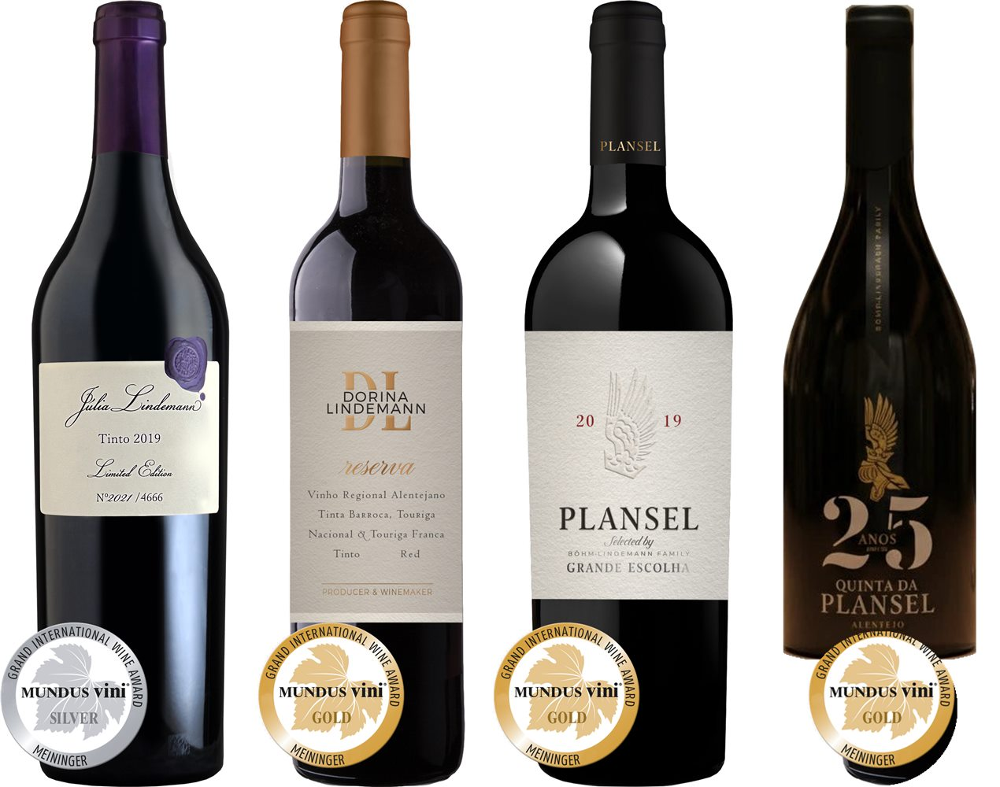
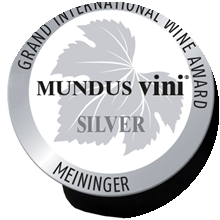

Unsere Produkte01
Unsere Produkte01

Alles von Plansel auf einen Blick
Was Sie bei Plansel finden.
Vom Wein im Glas bis zur Rebe im Boden: ein Familienbetrieb, der Weingüter seit 50 Jahren begleitet.
- 01Wein-EventsVeranstaltungen in Portugal und international, jede Woche neu.
- 02Plansel-Wein online kaufenTinto, Branco, Rosé aus dem Alentejo, direkt vom Weingut.
- 03Rebpflanzen kaufenZertifizierte Reben und Klone von Viveiros Plansel.
- 04Übernachten & Feiern auf der QuintaWohnungen, Stellplatz für Wohnmobile und Räume für Hochzeiten, Firmen und Feste, mit oder ohne Personal.
- 05Verkostungen mit Dorina & LuísaGegen Honorar buchbar: Wir kommen zu Ihrem Event, in Hotels und auf Messen, in Europa und weltweit, auch als Show-Verkostung. Beide sind offizielle Verkosterinnen bei Mundus Vini.
- 06Sommelier-AusbildungWSET-Kurse nach Londoner Standard, international anerkannt, auf Portugiesisch und Englisch.
- 07Abfüllung & ConsultingKleine Weingüter füllen bei uns ab und bekommen Beratung von drei Önologen, mit deutschem und internationalem Know-how.
- 08Vollernter mit FahrerMaschinelle Lese für Wein und Oliven: Wir stellen Vollernter samt erfahrenem Fahrer.
- 09Büro, Marketing & KI als ServiceBuchhaltung, Instagram und Website mit Shop für kleine Weingüter. Dazu Plansel Technology: KI-Anwendungen und Schulungen für Chefs.
 Events02
Events02
Was diese Woche rund um Wein in Portugal passiert.
Weinfeste, Verkostungen, Messen und Restaurant-Tipps. Jeden Donnerstag aktualisiert, mit direktem Link zum Veranstalter.
Portugal
International
Restaurant-Tipps
Termine ohne Gewähr. Bitte vor der Reise beim Veranstalter prüfen.
Event melden
Anzeige · 970 × 250 Billboard · über symplr

Ausgezeichnet bei Mundus Vini
Blind verkostet. Ausgezeichnet.
Wir stellen unsere Weine regelmäßig bei Mundus Vini an, dem internationalen Weinpreis des Meininger Verlags. Eine internationale Jury verkostet blind, ohne Etikett und ohne Namen. Jede Medaille ist deshalb ein unabhängiges Qualitätssiegel für Plansel-Weine.
 Quinta da Plansel 25 Anos (1997–2022)Einmalige Edition
Quinta da Plansel 25 Anos (1997–2022)Einmalige Edition- DL Dorina Lindemann Tinto Reserva 20212024
- Plansel Grande Escolha 20192024

Júlia Lindemann Limited Edition 20192024- 6× Gold und 5× Silber2023
- Plansel Selecta Reserva Branco 20142015

Christoph & Andrea MeiningerGeschäftsleitung · Meininger Verlag
Mundus Vini beim Meininger Verlag Die Plansel-Weine Bericht der Quinta
Dorina und Luísa sind zudem offizielle Verkosterinnen bei Mundus Vini.
- 1975Erste Rebflächen in Montemor-o-Novo
- ~50 %der zertifizierten Reben Portugals aus Plansel-Klonen*
- 50+Jahre Klonselektion portugiesischer Sorten
- 400.000 lWein pro Jahr aus der Quinta da Plansel
- WSETInternational Wine School auf dem Weingut
* Firmenangabe Plansel, zitiert bei Vinetur, 9. Nov. 2026
 Weine03
Weine03
Quinta da Plansel · Weine
Gehobener Wein aus Portugal. Mit Herkunftsnachweis bis zur Rebe.
Dorina, Önologin aus Geisenheim, keltert seit 1993 aus den Reben ihres Vaters. Von jeder Flasche wissen wir, von welchem Klon sie stammt.


 Erlebnisse04
Erlebnisse04
Enoturismo · Quinta da Plansel
Top-Erlebnisse, eine Stunde von Lissabon.
Verkostungen im Keller, Wine & Dine zwischen den Reben, Übernachten auf der Quinta und die Plansel Gin Experience.


 Academy05
Academy05

Plansel International Wine School
Sommeliers lernen dort, wo der Wein entsteht.
Offizielle WSET-Kurse nach dem Londoner Standard, unterrichtet von WSET-Educatorin Wilmy Matton, Önologin Dorina Lindemann und Gastprofessoren. Zwischen Rebschule, Labor und Keller.
- WSET Level 1 · WinesEinstieg für Gastronomie und Weinfreunde1 Tag
- WSET Level 2 · WinesRebsorten und Regionen der Welt3 Tage
- WSET Level 3 · WinesFür angehende Sommeliers5 Tage
- Masterclass PortugalKlone, Terroir, Keller. Mit dem Böhm-Archiv2 Tage
info@planselwineschool.com · +351 266 898 921
 Wissenschaft06
Wissenschaft06
Plansel Science · Das Böhm-Archiv
Die Wissenschaft hinter jeder Flasche.
Plansel heißt „Plantas Seleccionadas“. Hinter dem Namen steht ein Forschungsprogramm, das mit Universitäten arbeitet und die Rebsorten Portugals für das Klima von morgen vorbereitet.


„Portugal braucht seine eigene Forschung, damit es nicht von Sorten abhängig wird, die zu seinem Boden und Klima nicht passen.“
Comendador Jorge (Hans Jörg) Böhm, geboren 1938 in Neustadt an der Weinstraße, stammt aus einer deutschen Weinhändlerfamilie. 1961 strandete sein Segelschiff bei Cascais, und er verliebte sich in Portugal. Schon 1969 war das Familienunternehmen unter seiner Führung der größte Importeur portugiesischer Weine in Deutschland.
Nach einem Studium der Rebenzüchtung in Geisenheim gründete er 1981 Viveiros Plansel und begann die erste systematische Klonselektion portugiesischer Rebsorten, mit der Universidade de Évora und dem heutigen INIAV. Über 30 Forschungsprojekte später sind Plansel-Klone in Kalifornien, Neuseeland und Australien anerkannt, und ein großer Teil der Weinberge Portugals steht auf Plansel-Reben, vertrieben über Viveiros Plansel und Vinverus.
2006 ernannte ihn der Präsident der Portugiesischen Republik zum Comendador de Mérito Agrícola.
 OIV Award 2010
OIV Award 2010
Das Standardwerk · Chaves Ferreira, 2007
O Grande Livro das Castas
Das große Buch der Rebsorten Portugals. Herausgegeben von Comendador Jorge Böhm, ausgezeichnet von der Internationalen Organisation für Rebe und Wein (OIV). Es beschreibt die autochthonen Sorten des Landes, aus denen auch die Plansel-Weine entstehen.
PT · OriginalErhältlich
DE · ENKI-Übersetzung, Vorbestellung
FR · ES2027
中文 · PL2027
-
 Neu · 2026Livro Branco das Castas VitícolasNeue Rebsorten mit Pilzresistenz: wie Portugal weniger Pflanzenschutz braucht.
Neu · 2026Livro Branco das Castas VitícolasNeue Rebsorten mit Pilzresistenz: wie Portugal weniger Pflanzenschutz braucht. -
 EnglishThe Portuguese Vineyard and Wine BookGeschichte, Rebsorten, Terroir, Weinregionen und Essen zum Wein.
EnglishThe Portuguese Vineyard and Wine BookGeschichte, Rebsorten, Terroir, Weinregionen und Essen zum Wein. -
 Dinalivro · 2010D. João, Marquês de Montemor-o-NovoDie Geschichte hinter unserer Weinlinie Marquês de Montemor.
Dinalivro · 2010D. João, Marquês de Montemor-o-NovoDie Geschichte hinter unserer Weinlinie Marquês de Montemor.
2006Comendador de Mérito Agrícola, ernannt vom Präsidenten der Republik
2008Bester Weinbautechniker, Revista de Vinhos
2 × OIVBuchpreise der Internationalen Organisation für Rebe und Wein
2013Ehrenplakette der Universidade de Évora
2014Ehrenmedaille der Academia das Ciências de Lisboa
Klonselektion
Aus alten Weinbergen werden die gesündesten, ausdrucksstärksten Stöcke ausgewählt und vermehrt.
Resistente Sorten
Reben, die mit weniger Pflanzenschutz auskommen. Böhm hält das für die wichtigste Aufgabe der Branche.
Klimawandel
Pflanzmaterial für heißere Sommer und weniger Wasser, getestet im Alentejo.
Alte Sorten
Fast vergessene portugiesische Rebsorten werden wiederentdeckt und im Wein erprobt.
Reben und Klone kaufen bei Viveiros Plansel
Fragen Sie das Böhm-Archiv
KI-PrototypEine KI, trainiert auf 50 Jahren Plansel-Forschung, beantwortet Fachfragen in Ihrer Sprache und nennt die Quelle im Buch. Wählen Sie eine Beispielfrage:
 Technology07
Technology07

Plansel Technology
Wir bringen Weingüter ins KI-Zeitalter.
KI verändert Verkauf, Marketing und Verwaltung schneller, als ein kleines Weingut nebenher folgen kann. Wir setzen die Werkzeuge von Anthropic, Google Gemini und OpenAI für Sie ein und zeigen Ihnen, wie sie funktionieren.
Der Beweis steht vor Ihnen: Diese Website nutzt selbst KI. Der Sommelier empfiehlt Weine, das Böhm-Archiv beantwortet Fachfragen, und alle Texte gibt es in sieben Sprachen.
Beratung anfragenIndividuelle KI-Schulungen
Für Chefs und Team, auf Ihren Betrieb zugeschnitten: Wir arbeiten mit Ihren eigenen Weinen, Kunden und Abläufen. Auf Deutsch, Portugiesisch oder Englisch, auf der Quinta oder bei Ihnen.
- Prompts schreiben, die wirklich funktionieren
- Eigene KI-Assistenten für Verkauf und Büro
- Datenschutz und sichere Nutzung von KI
KI-Anwendungen für Ihr Weingut
- KI-Sommelier, der jeden Shop-Kunden persönlich berät
- Personalisierte E-Mails und Newsletter für jeden Kunden
- KI-Agent beantwortet Gäste- und Buchungsanfragen rund um die Uhr
- Weinbeschreibungen, Etiketten und Website automatisch in 7 Sprachen
- Instagram-Posts und Reels aus Ihren Fotos, mit KI betextet
- Verkaufs- und Lagerprognosen aus Ihren eigenen Daten
- Rechnungen und Belege werden gelesen, geprüft und vorgebucht
Outsourcing
Sie machen Wein, wir machen den Rest: Website mit Shop, Social Media, Buchhaltung. Ein Ansprechpartner, ein fester Monatspreis.
 Wine Letter08
Wine Letter08
The Plansel Wine Letter · jeden Donnerstag
Fünf Minuten, die Ihr Weinwissen erweitern.
Kostenlos, in Ihrer Sprache. Mit Inhalten aus der Wine School und dem Böhm-Archiv.
- 01Wein-Events weltweit in den nächsten 30 Tagen
- 02Termine in Portugal rund um Wein
- 03Ein Weingut der Woche
- 04Restaurants mit guter Weinkarte und Plansel
- 05Hotels in Portugal, in denen Sie Plansel trinken
- 06Eine Lektion aus der Wine School
 Netzwerk09
Netzwerk09
Netzwerk
Mit wem wir arbeiten.

Universidade de ÉvoraGemeinsame Forschung seit den ersten Weinen 1993
INIAVNationales Institut für Agrar- und Veterinärforschung
WSET LondonZertifizierte Kurse der Wine School
MeiningerMedienpartner für den deutschsprachigen Weinmarkt
 Familie10
Familie10
Die Familie Böhm-Lindemann
Eine Familie, die seit Generationen vom Wein lebt.
Aus einer Panne auf See wurde ein Lebenswerk: Drei Generationen haben aus Reben, Forschung und Keller die Quinta da Plansel gemacht.
-
Jorge BöhmGründer, Rebenzüchter, Comendador
-
 DorinaÖnologin und Herz des Weinguts
DorinaÖnologin und Herz des Weinguts
-
 JúliaMarketing, Social Media und Finanzen
JúliaMarketing, Social Media und Finanzen
-
 LuísaÖnologie und internationaler Vertrieb
LuísaÖnologie und internationaler Vertrieb
- 18. Jh.
Die Familie Böhm handelt mit Wein und wird zu einem der wichtigsten Weinimporteure Deutschlands.
- 1961
Jorge Böhms Segelschiff strandet im Hafen von Cascais. Er bleibt, lernt das Land kennen und erkennt das Potenzial der Rebsorten im Alentejo.
- 1975
Er kauft die ersten Flächen bei Montemor-o-Novo. Daraus entsteht die Rebschule Viveiros Plansel.
- 1990er
Tochter Dorina, Önologin aus Geisenheim, kommt mit ihrem Mann Thomas Lindemann nach Portugal.
- 1993
Mit Paulo Laureano entsteht in der Versuchskellerei der Universität Évora der erste Wein. Sein Name: Plansel, kurz für „Plantas Seleccionadas“.
- 1998
Dorina und Thomas haben in fünf Jahren ihren eigenen Keller gebaut: die Quinta da Plansel.
- Heute
Die Töchter Júlia und Luísa führen den Betrieb mit. Die Quinta erzeugt 400.000 Liter im Jahr, in fünf Weinlinien.
Quelle: Quinta da Plansel, „A história Lindemann-Böhm“ und „A nossa equipa“.